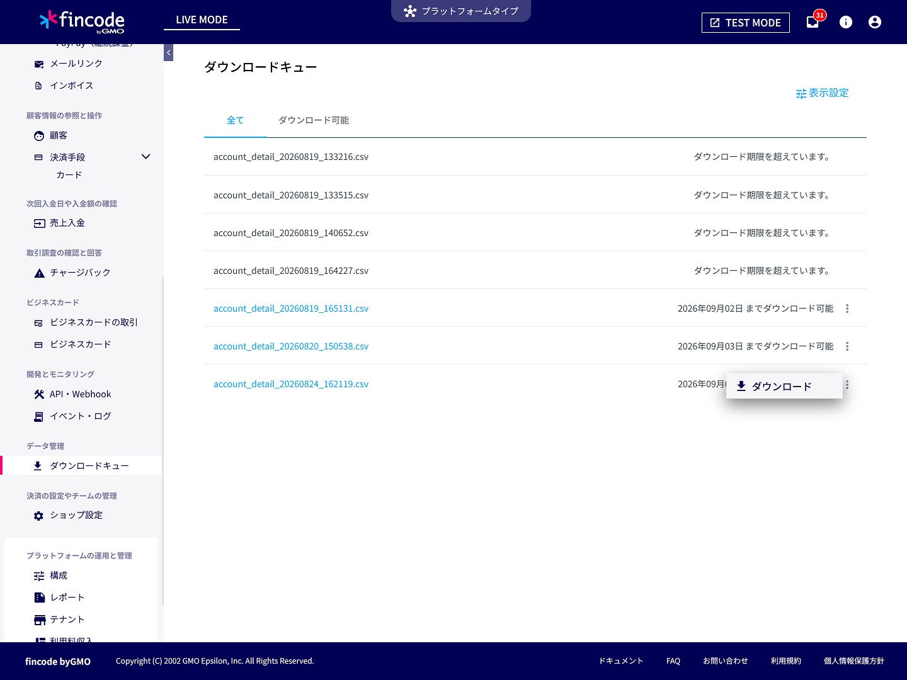

什么是下载队列
下载队列可按指定条件异步生成导出文件，并集中下载。
可以导出全部符合指定条件的数据，包含当前画面显示范围之外的数据。结算或导入内部系统时，如需大量数据，可使用此功能。
提交导出请求后，可以关闭画面并等待处理完成。
可导出的数据
可通过下载队列获取以下数据文件。
请在显示各项数据的画面提交导出请求。各类数据的筛选条件不同，请参阅相应页面。
| 数据 | 提交导出请求的画面 | 文件格式 |
|---|---|---|
| 销售款入账的交易明细 | 销售款入账详情中的［交易明细］ 操作步骤请参阅导出交易明细。 | CSV |
下载文件
fincode 会按顺序处理队列中的条件并生成文件。
在生成完成前，列表中的对应文件显示“正在准备文件”。请稍候再查看。

- 商户请在管理后台打开侧栏菜单［数据管理］＞［下载队列］。
- 在［全部］或［可下载］标签页找到目标文件。
- 点击文件名链接，或点击该行右侧的菜单（︙）＞［下载］。
- 浏览器将显示下载对话框，您可以保存文件。
列表有以下两个标签页。
| 标签页 | 显示的文件 |
|---|---|
| 全部 | 加入队列的所有文件，包括已超过下载期限的文件 |
| 可下载 | 仅显示当前可下载的文件 |
文件状态显示在列表右侧。
| 显示 | 状态 |
|---|---|
| 正在准备文件 | 正在等待生成文件。 |
| 可下载至 YYYY 年 MM 月 DD 日 | 文件可下载。所显示的日期就是下载截止日。 |
| 已超过下载期限。 | 文件已过下载期限。如仍需要相同的数据，请重新提交导出请求。 |
下载期限和保存数量
| 限制项目 | 说明 |
|---|---|
| 下载期限 | 文件生成后 14 天内可下载。超过期限的文件会被删除。 |
| 可保存文件的数量 | 每个商户最多保存 10 个文件，所有数据类型合计，只统计下载期限内的文件。 |
即使已达到上限，导出条件仍会加入队列。生成文件后会从旧到新删除，只保留最新的 10 个文件供下载。
未超过下载期限的文件也可能被删除。请及时下载所需文件。
注意事项
- 只有可以查看目标数据的用户才能提交导出请求。各角色的操作权限请参阅团队管理。
- 下载过程中如文件因过期等原因被删除，重新连接（从中断处继续）时可能下载失败。此时请重新提交导出请求。